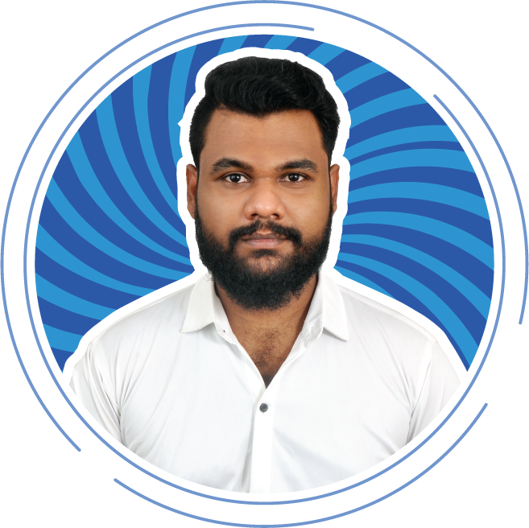

Abdul Aziz V I

Summary
Hello! Im Abdul Aziz, a graphic and UI/UX designer. i have a strong passion for creating aesthetic design that maximize usability, i bring ideas to life and create a compelling and aesthetically, pleasing story through design. 1.4 years of experience in UX/UI industry. extensive experience with conceptualizing UI/UX for various apps & websites. specializes in rebranding projects, where vast knowledge of design, and team management can be applied drafts own idea using programs such as figma, illustrator, photoshop, adobe XD, Balsamiq, protopie.
Education
- Bachelor of Computer Science Engineering
- Francis Xavier Engineering College
- 2019 - 2023
- 7.13 CGPA
- High School XI - XII
- Bharath Montessori Matric Hr Sec School
- 2015 - 2017
- 75%
Work Experience
UI/UX Designer - Triton Tech Labs .PVT.LTD
Feb 2023 - Mar 2024
- Worked on UX Designer on Medical related Project
- Collabrating with dev Team for product Development
- Running Usability Testing after running into prototype
Product Designer - Plus 65 Marketting .PVT.LTD
Apr 2024 - Preent
- Worked on Product Designer for Company F&B Related Product
- Product Ownership for Digital Ordering, Kiosk Ordering, HRMS Project
- Overral Project management with developer, tester, stackholders
Skills
- Figma
- Adobe Illustrator
- Adobe Photoshop
- Adobe XD
- Balsamiq
- HTML
- UX Researcher
- Micro Animation
Awards & Certification
- Pro Active Innovative Thinker (September 2024)
Other